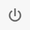

The system has been designed to facilitate the operator in the working of pieces. Through the software it is possible:
Create recipes for piece workings
Check and modify the configuration of the Group and Elements that make up the machine
Monitor execution of workings on screen
Display statistics related to the machine and the work performed by it

Operational status of the Machine
Operational status of the machine indicates whether it is in Working, waiting for instructions, on alert or in Error.
Each state is associated with a color, visible in the background of the application pages.
 | Waiting |
 | Working |
 | Error |
 | Alert |
Side menu
The sidebar allows navigation between the different program pages.

 | Menu |
 | Home |
 | Alarms |
 | Recipes |
 | Statistics |
 | Settings |
Top bar
The active warning and error messages are displayed in the application's top bar. Additionally, the name of the recipe currently loaded on the machine is shown.
The operator can access the alarms page by pressing the messages.

 | Active Recipe |
 | Error |
 | Notice |
Bottom bar
Utility buttons are located to the right of the lower section of each screen.

Remote Assistance | |
 | Minimize to icon |
 | Stop system |
Remote Assistance
Clicking the Remote Assistance button in the bottom bar allows opening a panel with ID and Password to be communicated to Donatoni technical assistance when needed to enable remote connection to the machine.

The Remote Assistance icon and panel background will be green if the system is online and ready for connection, red otherwise.
 | Copy as image |
 | Copy as text |
 | Reload |